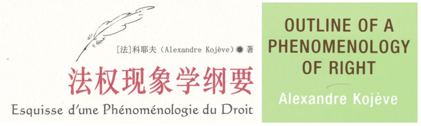

返回主页
Kojève著作他的拉丁帝国梦

Richelieu, von Metternich, Disraeli, von Bismarck
科耶夫（Kojève）缔造欧盟（EU）堪称外交大师，合纵连横！
科耶夫（Kojève）的新拉丁帝国是半个世纪前的国际战略构想，当时正是美利坚帝国与苏联帝国两强争霸，科耶夫为了伸张欧洲的国际政治地位，提出在新的时代欧洲必须组成联合体以在苏美两强的夹缝中找到自身的生存空间。然而冷战以后苏维埃帝国的瓦解和中国的崛起已经深刻改变了世界，毛泽东有词云： 安得倚天抽宝剑把汝裁为三截 一截遗欧 一截赠美 一截还东国，太平世界 环球同此凉热。
Adolf Hitler Paintings in Vienna (1908�C1913)
Kojève 苏秦 张仪 鬼谷子
文革后一场改史焚书的闹剧
探寻英美宪政民主政制的超验之维
欧洲近现代历史上宪政民主政制的生成、建构与演进
version:1.0; jobnet@188.com © retter2012.com